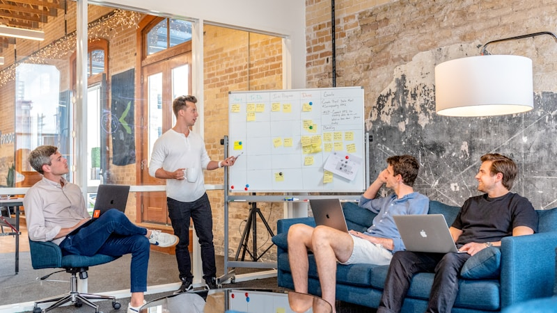
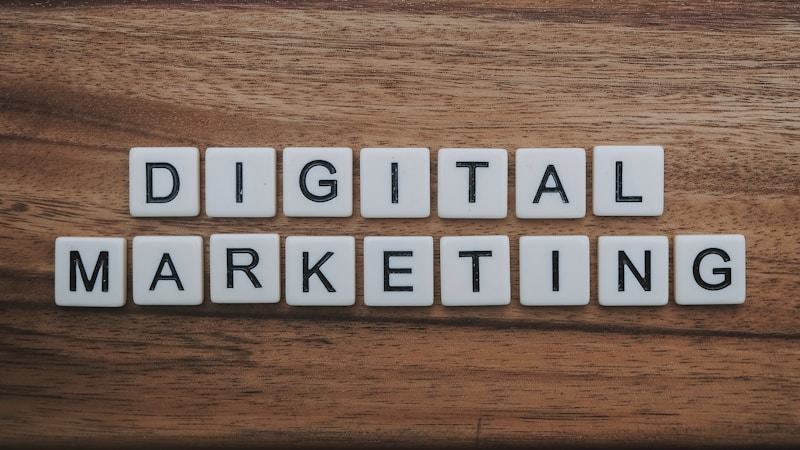

Il digital marketing come motore di crescita
Troppo spesso il marketing digitale viene percepito come una spesa: un budget da allocare sperando in risultati. In NovaTechHub lo consideriamo esattamente l’opposto - un investimento misurabile con ritorni concreti e tracciabili. Ogni campagna che lanciamo, ogni contenuto che pubblichiamo, ogni strategia che implementiamo parte da un presupposto fondamentale: i dati devono guidare ogni decisione.
Il mercato digitale italiano è sempre più competitivo. I costi per acquisizione crescono, gli algoritmi delle piattaforme cambiano continuamente e gli utenti sono esposti a migliaia di messaggi pubblicitari ogni giorno. Per emergere serve un approccio strutturato, professionale e soprattutto integrato: una strategia che unisca SEO, advertising a pagamento, social media, content marketing e analisi dei dati in un ecosistema coerente. Questo è esattamente ciò che facciamo.
Strategia SEO
La SEO è il fondamento di ogni presenza digitale sostenibile nel tempo. A differenza della pubblicità a pagamento, i risultati della SEO si accumulano e generano traffico organico qualificato senza costi per clic. Ma una strategia SEO efficace richiede competenze tecniche profonde e un approccio sistematico.
SEO tecnica
Analizziamo l’architettura del tuo sito per assicurarci che i motori di ricerca possano scansionarlo e indicizzarlo correttamente. Interveniamo su:
- Velocità di caricamento - Ottimizzazione dei Core Web Vitals (LCP, INP, CLS), compressione delle immagini, lazy loading, minificazione di CSS e JavaScript, configurazione della cache del browser.
- Crawlability e indicizzazione - Struttura delle URL pulita e gerarchica, sitemap XML aggiornata, robots.txt ottimizzato, gestione dei redirect 301 e risoluzione degli errori 404.
- Dati strutturati - Implementazione di Schema.org markup (Organization, Product, FAQ, Breadcrumb, LocalBusiness) per ottenere rich snippet nei risultati di ricerca e migliorare il CTR organico.
- Mobile-first - Verifica completa dell’esperienza mobile, responsive design, usabilità su touch device e conformità alle linee guida di Google per l’indicizzazione mobile-first.
Ottimizzazione on-page
Ogni pagina del tuo sito deve essere ottimizzata per comunicare chiaramente il proprio contenuto sia ai motori di ricerca che agli utenti. Lavoriamo su title tag, meta description, struttura dei heading (H1-H6), ottimizzazione delle immagini con alt text descrittivi, internal linking strategico e ottimizzazione dell’URL slug. Utilizziamo strumenti come Screaming Frog, Ahrefs e Google Search Console per identificare opportunità e monitorare i progressi.
Content strategy e link building
Sviluppiamo piani editoriali basati su ricerche keyword approfondite, analisi della concorrenza e mappatura dell’intento di ricerca. Creiamo contenuti che rispondono a domande reali del tuo pubblico target, posizionandoti come autorità nel tuo settore. Parallelamente, costruiamo un profilo di backlink naturale attraverso digital PR, guest posting su testate autorevoli e creazione di contenuti linkabili (studi, infografiche, strumenti gratuiti).
Local SEO
Per le aziende con sede fisica o che operano su un territorio specifico, ottimizziamo il profilo Google Business, gestiamo le recensioni, curiamo le citazioni NAP (Nome, Indirizzo, Telefono) su directory locali e creiamo pagine di atterraggio geo-localizzate. Una strategia di Local SEO ben eseguita può portare un aumento significativo delle visite in negozio e delle chiamate dirette.

Campagne pubblicitarie
La pubblicità a pagamento è il modo più rapido per generare traffico qualificato e conversioni. Ma senza una gestione esperta, il budget si disperde rapidamente. Gestiamo campagne su tutte le principali piattaforme, con un approccio basato su test continui e ottimizzazione granulare.
Google Ads
- Campagne Search - Ricerca keyword approfondita, struttura degli ad group ottimizzata, creazione di annunci con estensioni (sitelink, callout, snippet strutturati), gestione delle keyword negative e bid strategy avanzate (Target CPA, Target ROAS, Maximize Conversions).
- Campagne Display - Targeting per audience di affinità, in-market e custom intent. Creatività responsive e banner statici. Esclusione di posizionamenti non performanti e ottimizzazione continua.
- Campagne Shopping - Configurazione del Merchant Center, ottimizzazione del feed prodotti (titoli, descrizioni, immagini, attributi), struttura delle campagne per marginalità e Performance Max con segnali di audience mirati.
- YouTube Ads - Campagne video in-stream e discovery per awareness e consideration. Targeting per argomento, canale e audience personalizzate.
Meta Ads (Facebook e Instagram)
Gestiamo l’intero funnel pubblicitario sulla piattaforma Meta, dalla brand awareness alla conversione finale:
- Awareness - Campagne Reach e Brand Awareness con creatività video e carousel per far conoscere il tuo brand a pubblici nuovi e rilevanti.
- Consideration - Campagne Traffic, Engagement e Lead Generation. Utilizzo di Instant Form, Messenger e WhatsApp Business per catturare contatti direttamente nella piattaforma.
- Conversione - Campagne ottimizzate per acquisti, registrazioni e azioni di valore. Lookalike audience basate sui tuoi clienti migliori, cataloghi prodotti dinamici e retargeting avanzato con segmentazione per comportamento.
- Testing sistematico - A/B test su creatività, copy, audience, posizionamenti e formati. Creative testing framework con regole chiare per scalare i vincitori e pausare i perdenti.
LinkedIn Ads
La piattaforma ideale per la lead generation B2B e il recruiting di talenti. Configuriamo campagne Sponsored Content, Message Ads, Document Ads e Conversation Ads con targeting per ruolo aziendale, settore, dimensione dell’azienda e competenze. Integriamo il tracciamento delle conversioni tramite LinkedIn Insight Tag e sincronizziamo i lead con il tuo CRM per un follow-up immediato.
Retargeting cross-piattaforma
Chi visita il tuo sito senza convertire non è un utente perso - è un’opportunità. Configuriamo strategie di retargeting sofisticate che seguono l’utente attraverso Google Display, Meta, LinkedIn e YouTube. Segmentiamo il pubblico per livello di engagement (visitatori di pagine specifiche, utenti che hanno aggiunto al carrello senza acquistare, utenti che hanno iniziato un form senza completarlo) e personalizziamo il messaggio di conseguenza.
Social media management
I social media non sono un canale opzionale: sono il luogo dove i tuoi clienti formano la loro opinione sul tuo brand. Una gestione professionale trasforma i social da semplice vetrina a vero strumento di relazione e conversione.
Pianificazione dei contenuti
Creiamo piani editoriali mensili con un mix strategico di contenuti: post educativi che dimostrano la tua competenza, contenuti di intrattenimento che generano engagement, storie di successo e case study che costruiscono fiducia, e post promozionali che guidano all’azione. Ogni contenuto è pensato per una specifica fase del funnel e per la piattaforma su cui verrà pubblicato.
Community management
Rispondiamo ai commenti, gestiamo le conversazioni in DM, moderiamo le discussioni e trasformiamo le interazioni in opportunità di business. Un community management attivo aumenta la portata organica dei tuoi contenuti e costruisce una relazione autentica con il tuo pubblico. Definiamo protocolli di risposta e tone of voice per garantire coerenza e professionalità.
Brand voice e strategia per piattaforma
Ogni piattaforma ha il suo linguaggio e il suo pubblico. Un post che funziona su LinkedIn non funziona su Instagram, e viceversa. Definiamo una brand voice coerente ma adattabile, e sviluppiamo strategie native per ogni canale: contenuti professionali e thought leadership per LinkedIn, visual storytelling e Reel per Instagram, video brevi e trend per TikTok, aggiornamenti e customer care per Facebook.
Content marketing
Il content marketing è l’investimento a lungo termine che costruisce autorità, genera traffico organico e alimenta i tuoi funnel di vendita. Non si tratta di “pubblicare un blog” - si tratta di creare un asset strategico che lavora per te 24 ore su 24.
Strategia blog e contenuti SEO
Identifichiamo le keyword con il miglior rapporto tra volume di ricerca, intento commerciale e difficoltà di posizionamento. Creiamo un calendario editoriale con contenuti pillar (articoli approfonditi su temi chiave) e cluster (contenuti di supporto collegati). Ogni articolo è ottimizzato per la SEO ma scritto per le persone: informativo, autorevole e azionabile.
Lead magnet e risorse scaricabili
Sviluppiamo contenuti ad alto valore percepito - guide PDF, whitepaper, checklist, template, calcolatori interattivi - che gli utenti possono scaricare in cambio del loro indirizzo email. Questo alimenta il tuo database di contatti qualificati e apre la porta a sequenze di nurturing personalizzate.
Email marketing e automation
Configuriamo piattaforme come Mailchimp, ActiveCampaign, Brevo (ex Sendinblue) o HubSpot per creare sequenze automatizzate di email che accompagnano il lead dal primo contatto alla conversione. Progettiamo welcome sequence, nurturing workflow basati sul comportamento dell’utente, email di carrello abbandonato, campagne di re-engagement e newsletter periodiche. Ogni email è segmentata, personalizzata e testata (oggetto, contenuto, CTA, orario di invio).
Marketing automation
Andiamo oltre la semplice email automation: implementiamo flussi di marketing automation che integrano email, SMS, notifiche push e azioni CRM. Lead scoring per qualificare i contatti, trigger basati sul comportamento (visita una pagina pricing, scarica un case study, apre tre email di seguito) e handoff automatico al team commerciale quando il lead è pronto per essere contattato.

Analisi e ottimizzazione
Lanciare campagne è solo l’inizio. La vera differenza tra un investimento di marketing che funziona e uno che spreca budget sta nell’ottimizzazione continua basata sui dati. Ogni decisione che prendiamo è supportata da numeri reali, non da intuizioni.
A/B testing strutturato
Testiamo sistematicamente ogni variabile: titoli degli annunci, immagini, copy, call to action, landing page, form, colori dei pulsanti, layout. Utilizziamo strumenti come Google Optimize, VWO e test nativi delle piattaforme adv. Ogni test segue un protocollo rigoroso con ipotesi, dimensione del campione, durata minima e significatività statistica prima di dichiarare un vincitore.
Conversion Rate Optimization (CRO)
Analizziamo il percorso dell’utente dalla prima interazione alla conversione, identificando i punti di frizione che causano abbandono. Utilizziamo heatmap (Hotjar, Microsoft Clarity), registrazioni delle sessioni, analisi dei funnel e survey on-site per capire perché gli utenti non convertono, non solo dove abbandonano. Ogni intervento di CRO viene testato e il suo impatto misurato con precisione.
Modelli di attribuzione
In un percorso d’acquisto che tocca molteplici canali e touchpoint, capire quale interazione ha realmente contribuito alla conversione è fondamentale per allocare il budget in modo intelligente. Configuriamo modelli di attribuzione data-driven in GA4, confrontiamo i risultati con modelli basati su regole (last click, first click, lineare, time decay) e aiutiamo il tuo team a prendere decisioni di budget informate.
Reportistica ROI
Ogni mese ricevi un report chiaro e trasparente con le metriche che contano davvero per il tuo business: costo per lead (CPL), costo per acquisizione (CPA), ritorno sulla spesa pubblicitaria (ROAS), tasso di conversione per canale, lifetime value dei clienti acquisiti e trend di crescita. Niente vanity metrics come impression e like - solo numeri che impattano direttamente il tuo fatturato. I report sono accompagnati da analisi qualitative e raccomandazioni operative per il mese successivo.
Il nostro metodo
Ogni collaborazione segue un ciclo strutturato in cinque fasi, progettato per massimizzare i risultati e minimizzare gli sprechi:
- Audit iniziale - Analizziamo lo stato attuale della tua presenza digitale: sito web, profili social, campagne attive, analytics, posizionamento SEO, competitor. Identifichiamo i punti di forza da valorizzare e le lacune da colmare. L’audit produce un documento dettagliato con benchmark, opportunità e priorità.
- Strategia - Sulla base dell’audit, definiamo obiettivi SMART (Specifici, Misurabili, Raggiungibili, Rilevanti, Temporizzati), scegliamo i canali prioritari, allochiamo il budget e creiamo il piano operativo. La strategia include un calendario delle attività, i KPI da monitorare e i milestone di verifica.
- Esecuzione - Implementiamo la strategia con attenzione maniacale ai dettagli: configurazione delle campagne, creazione dei contenuti, setup del tracking, lancio coordinato su tutti i canali. Ogni asset viene revisionato internamente prima della pubblicazione.
- Misurazione - Monitoriamo le performance in tempo reale con dashboard personalizzate. Raccogliamo dati su ogni touchpoint e li incrociamo per avere una visione completa del percorso dell’utente dalla prima interazione alla conversione finale.
- Ottimizzazione - Sulla base dei dati raccolti, ottimizziamo continuamente: riduciamo la spesa sui canali meno performanti, riallochiamo budget verso ciò che funziona, testiamo nuove creatività, aggiorniamo il targeting, miglioriamo le landing page. Questo ciclo si ripete ogni mese, generando un miglioramento progressivo e costante dei risultati.
Questo approccio iterativo significa che i risultati migliorano mese dopo mese. Non esiste una “configurazione perfetta” al primo tentativo: esiste un processo di apprendimento continuo basato su dati reali che ci permette di avvicinarci sempre di più alla massima efficienza del tuo investimento in marketing digitale.
Hai un progetto in mente?
Raccontaci la tua idea e troviamo insieme la soluzione migliore.
Parliamoci